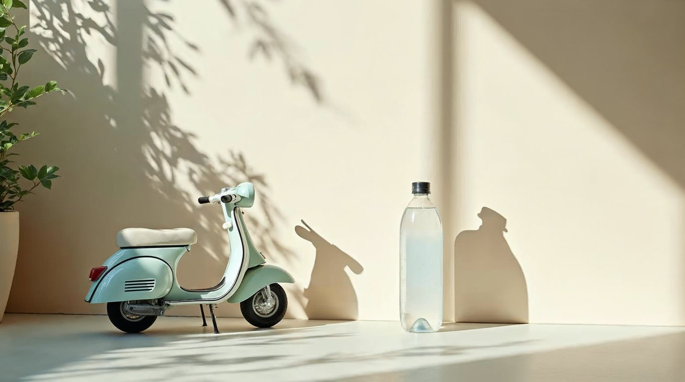
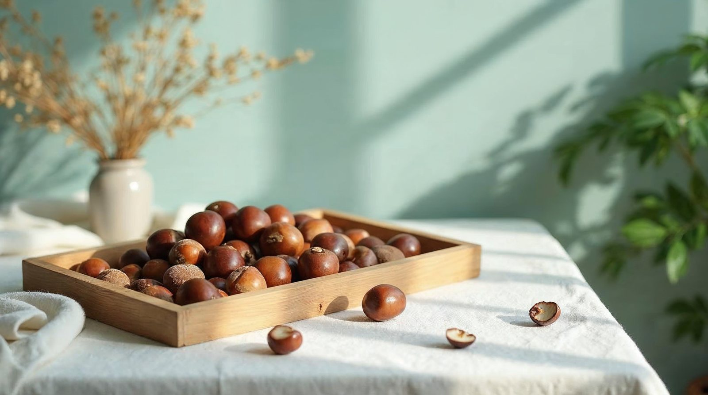
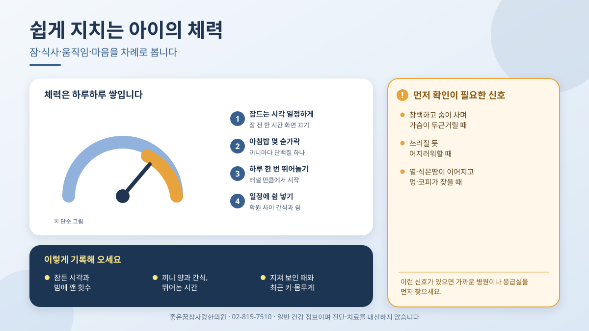

이종호 한의사 감수좋은꿈참사랑한의원 대표원장 (한의사 면허번호 19769)발행 2026-11-26 · 수정 2026-11-27
이 글의 차례
놀이터에서 친구들이 아직 한창 뛰어다니는데 우리 아이만 벤치에 앉아 숨을 고릅니다. "힘들어, 집에 가자." 학교에서 돌아오면 가방을 내려놓자마자 소파에 눕고, 주말 나들이도 금방 업어 달라고 하죠. '우리 아이만 왜 이렇게 기운이 없을까' 싶어 마음이 무거우실 거예요.
진료실에서 "애가 체력이 너무 약해요"라는 말을 정말 자주 들어요. 감기를 달고 살거나 입이 짧은 아이의 부모님께서 특히 많이 하세요. 보약 한 첩이면 기운이 날까 싶어 오셨다는 분도 계시고요.
그 마음 충분히 이해해요. 그런데 저는 보약 얘기보다 먼저 여쭙는 게 있어요. 아이가 몇 시에 자는지, 아침은 먹는지, 오후엔 뭘 하며 지내는지요. 왜인 줄 아세요? 아이가 쉽게 지치는 데에는 여러 이유가 겹쳐 있는 경우가 많거든요.
몸이 약해서일 수도 있지만, 잠이 부족하거나, 먹는 양이 적거나, 움직일 기회가 적었거나, 마음이 지쳐서일 수도 있어요. '체력이 약한 것'과 '지칠 만한 하루를 보내는 것'은 다른 얘기예요. 이 글에서는 그 실타래를 하나씩 풀어 볼게요.

체력이 약하다는 것은 어떤 모습인가요
부모님이 말씀하시는 체력이 약하다는 모습은 아이마다 조금씩 다릅니다. 조금만 걸어도 다리가 아프다고 하는 아이, 놀다가 금방 숨이 차는 아이, 하교 뒤 늘 졸려 하는 아이, 감기에 한 번 걸리면 오래 앓는 아이가 모두 이 이야기 안에 들어 있습니다.
아이들은 원래 에너지가 넘치는 듯 보이지만, 실제로는 짧게 힘껏 쓰고 짧게 쉬는 방식으로 움직입니다. 그래서 놀다가 잠깐 주저앉는 것 자체는 자연스러운 일입니다. 걱정이 되는 것은 쉬어도 기운이 돌아오지 않거나, 예전보다 눈에 띄게 지치는 모습이 이어질 때입니다.
같은 반 아이들과 비교하면 걱정이 커지기 쉽습니다. 그러나 아이마다 몸의 크기, 근육량, 성향이 다릅니다. 비교보다 지난달, 지난해의 우리 아이와 견주어 보는 것이 더 정확한 기준이 됩니다.
왜 어떤 아이는 쉽게 지칠까요
첫째, 잠입니다. 성장기 아이는 어른보다 훨씬 많은 잠이 필요합니다. 학원과 숙제, 영상 때문에 잠드는 시각이 늦어지면 아침에 일어나기 힘들고 낮 내내 기운이 없습니다. 코골이나 입으로 숨 쉬기 때문에 잠이 얕은 아이도 다음 날 쉽게 지칩니다.
둘째, 먹는 양과 질입니다. 입이 짧거나 편식이 심하면 몸이 쓸 연료가 부족합니다. 아침을 거르고 학교에 가면 오전 내내 집중이 어렵고 금세 지칩니다. 단백질과 철분이 부족하면 근육과 피를 만드는 재료가 모자라게 됩니다.
셋째, 움직임이 적은 생활입니다. 몸은 쓸수록 단단해집니다. 실내에서 앉아 보내는 시간이 길면 근육과 심폐 기능이 덜 자라고, 그만큼 조금만 움직여도 힘들게 느껴집니다. 체력이 약해서 덜 움직이고, 덜 움직여서 다시 체력이 약해지는 고리가 생기기 쉽습니다.
넷째, 병을 앓고 난 뒤입니다. 독감, 장염, 폐렴처럼 앓고 나면 몸이 회복하는 데 시간이 걸립니다. 열은 내렸어도 몇 주 동안 입맛과 기운이 돌아오지 않는 아이가 많습니다.
다섯째, 마음의 피로입니다. 새 학기, 친구 관계, 공부 부담 때문에 마음이 지치면 아이는 그것을 "힘들어", "피곤해"라는 말로 표현하기도 합니다. 몸은 괜찮아 보이는데 학교 가기 전이나 학원 가기 전에만 유독 지친다면 마음 쪽도 함께 살펴볼 필요가 있습니다.
한의학에서는 쉽게 지치는 아이를 기운이 아직 넉넉하지 않다거나, 소화하는 힘이 약해 먹은 것을 기운으로 잘 바꾸지 못한다고 설명해 왔습니다. 이것은 아이의 체질 경향을 살피는 오래된 표현이지 진단명은 아닙니다. 진찰에서는 이 관찰을 잠, 식사, 활동, 마음 상태와 함께 참고합니다.
다른 이유는 없는지 먼저 확인합니다
쉽게 지치는 모습 뒤에 다른 상태가 숨어 있는 경우도 있습니다. 빈혈이 있으면 얼굴과 입술, 손톱이 창백하고 숨이 쉽게 찹니다. 갑상선 기능이 떨어지면 추위를 많이 타고 변비가 생기며 키 자람이 더딜 수 있습니다.
물을 유난히 많이 마시고 소변을 자주 보면서 살이 빠진다면 혈당을 확인해 봐야 합니다. 계단을 오를 때 다른 아이보다 유독 숨이 차고 가슴이 두근거린다고 한다면 심장이나 폐를 살펴볼 필요가 있습니다.
이런 모습이 하나라도 함께 보인다면 체력 문제로만 보기 전에 소아청소년과에서 먼저 확인을 받아 두세요. 확인을 받고 나면 부모 마음도 한결 가벼워지고, 생활 관리에 집중할 수 있습니다.
먼저 이렇게 여쭙니다
아이가 쉽게 지친다고 하시면 저는 아래 질문을 차례로 드립니다. 부모님과 아이가 함께 답해 주시면 좋습니다.
- 언제부터 쉽게 지치기 시작했나요? 앓고 난 뒤였나요?
- 잠드는 시각과 일어나는 시각은 언제인가요? 코를 골거나 입을 벌리고 자나요?
- 아침밥은 먹나요? 끼니 양과 좋아하는 음식, 피하는 음식은 무엇인가요?
- 하루에 밖에서 뛰어노는 시간은 얼마나 되나요?
- 학원이나 숙제는 하루에 몇 시간쯤 되나요?
- 감기에 자주 걸리거나, 배가 자주 아프다고 하나요?
- 요즘 학교나 친구 관계에서 힘든 일이 있었나요?
아이에게는 "하루 중 언제 제일 힘들어?" 하고 직접 물어봅니다. 아이가 "학원 끝나고요", "아침에요"처럼 구체적인 때를 말해 주면 그 시간대를 중심으로 생활을 들여다볼 수 있습니다.
일상에서 먼저 해 볼 수 있는 것
체력은 하루아침에 생기지 않습니다. 대신 잠과 식사, 움직임의 기본을 꾸준히 쌓으면 아이 몸은 생각보다 빠르게 반응하기도 합니다. 한꺼번에 다 바꾸려 하지 말고 하나씩 시작해 보세요.
- 잠드는 시각을 일정하게 정하고, 잠들기 한 시간 전에는 화면 끄기
- 아침밥은 몇 숟가락이라도 먹고 집을 나서기
- 끼니마다 달걀, 생선, 고기, 콩 같은 단백질 반찬 하나 챙기기
- 하루 한 번은 밖에서 땀이 날 만큼 뛰어놀기
- 학교에서 돌아오면 바로 학원에 가기보다 잠깐 간식과 쉼 두기
- 주말 중 하루는 늦잠과 영상보다 가족 산책이나 놀이로 보내기
운동은 처음부터 강하게 시작하지 않는 것이 중요합니다. 체력이 약한 아이에게 갑자기 긴 운동을 시키면 힘든 기억만 남아 오히려 움직이기 싫어할 수 있습니다. 줄넘기 열 번, 놀이터 한 바퀴처럼 아이가 해낼 수 있는 만큼에서 시작해 조금씩 늘려 가세요.
간식은 과자나 단 음료보다 우유, 요구르트, 고구마, 과일, 삶은 달걀처럼 식사에 보탬이 되는 것으로 골라 주세요. 단 것을 먹으면 잠깐 기운이 나는 듯하지만 금방 다시 처지기 쉽습니다.
아이가 좋아하는 움직임을 찾아 주세요
체력을 기르는 데 가장 좋은 운동은 아이가 즐겁게 꾸준히 하는 운동입니다. 공놀이를 좋아하는 아이, 물놀이를 좋아하는 아이, 자전거를 좋아하는 아이, 춤을 좋아하는 아이가 다 다릅니다. 몇 가지를 함께 해 보고 아이 눈이 반짝이는 것을 골라 주세요.
부모가 함께 움직이면 아이는 훨씬 오래 버팁니다. 저녁 먹고 동네 한 바퀴를 함께 걷거나, 주말에 가까운 공원에서 배드민턴을 치는 것만으로도 충분히 좋은 시작입니다. 아이에게는 운동이 아니라 부모와 노는 시간으로 기억됩니다.
학원이나 운동 수업을 늘릴 때는 아이의 하루가 너무 빡빡하지 않은지도 함께 보세요. 운동도 쉼과 잠이 뒷받침되어야 체력으로 쌓입니다. 일정이 꽉 찬 아이에게는 운동을 하나 더하기보다 잠을 삼십 분 더 챙겨 주는 편이 나을 때도 있습니다.
계절과 학기에 따라 기운이 출렁입니다
아이의 기운은 일 년 내내 같지 않습니다. 새 학기가 시작되는 봄과 가을에는 낯선 환경에 적응하느라 몸과 마음이 함께 지치기 쉽습니다. 여름에는 더위에 입맛이 떨어지고 잠이 얕아지며, 겨울에는 바깥 활동이 줄어 움직임이 적어집니다.
이런 흐름을 알고 있으면 아이가 갑자기 처질 때 덜 놀라게 됩니다. 새 학기 첫 몇 주는 학원 일정을 조금 느슨하게 잡고, 여름에는 찬 음식보다 미지근한 물과 입맛 도는 반찬을, 겨울에는 실내에서도 몸을 움직일 놀이를 챙겨 주세요.
방학이 끝날 무렵에는 일주일쯤 앞서 잠드는 시각과 일어나는 시각을 학기 중 리듬으로 되돌려 두는 것이 좋습니다. 리듬이 갑자기 바뀌면 개학 첫 주 내내 아이가 지쳐 보일 수 있습니다.
하루 일정의 틈을 살펴 주세요
요즘 아이들의 하루는 어른 못지않게 빡빡합니다. 학교가 끝나면 학원 두세 곳을 돌고, 저녁을 늦게 먹고, 숙제를 하다 보면 잠자리에 드는 시각이 훌쩍 늦어집니다. 이런 하루가 이어지면 체력이 약한 아이는 쉽게 바닥이 납니다.
일주일 일정을 한 장에 적어 보시면 아이에게 숨 돌릴 틈이 얼마나 있는지 한눈에 보입니다. 쉬는 날이 하루도 없다면 일정 하나를 덜어 내거나, 학원 사이에 간식과 짧은 쉼을 넣어 주는 것만으로도 아이의 저녁 표정이 달라질 수 있습니다.
아이에게 "이번 주에 제일 힘든 날이 언제야?" 하고 물어보는 것도 좋습니다. 아이가 꼽은 요일의 일정부터 조금 가볍게 바꿔 주면, 아이는 자기 말이 받아들여졌다는 경험 덕분에 남은 일정도 한결 힘을 내서 해냅니다.

보약을 먹이면 체력이 좋아지나요?
부모님께 가장 자주 받는 질문 가운데 하나입니다. 한약은 아이를 진찰하고 잠과 식사, 소화, 활동 상태를 살핀 뒤에 필요하다고 판단될 때 상의하는 것이 좋습니다. 한약 한 가지로 체력이 좋아진다고 약속드리기는 어렵습니다.
한약을 상의하게 되면 아이가 먹고 있는 약과 영양제, 알레르기 여부를 모두 확인하고 신중히 정합니다. 그리고 한약을 먹는 동안에도 잠, 식사, 움직임의 기본이 함께 가야 한다는 점을 꼭 말씀드립니다. 생활이 그대로라면 어떤 도움도 오래가기 어렵기 때문입니다.
영양제도 마찬가지입니다. 여러 가지를 한꺼번에 챙기기보다, 아이의 식사에서 무엇이 부족한지 먼저 살피고 꼭 필요한 것만 고르시길 권합니다. 영양제를 먹이고 있다면 진료 때 이름을 알려 주세요.
한의원에서 함께 살필 수 있는 경우
- 앓고 난 뒤 몇 주가 지나도 입맛과 기운이 돌아오지 않는 아이
- 입이 짧고 소화가 약해 조금만 먹어도 배가 아프다는 아이
- 감기에 자주 걸리고 한 번 걸리면 오래 앓는 아이
- 잠이 얕고 아침에 일어나기 힘들어하며 낮에 늘 처지는 아이
- 소아청소년과 검사에서 큰 이상은 없다고 들었지만 생활 관리를 함께 정리하고 싶은 경우
좋은꿈참사랑한의원에서는 아이를 진찰한 뒤 잠, 식사, 활동 가운데 지금 가장 먼저 손볼 곳을 함께 찾습니다. 맥과 배를 살피고, 아이 성장 기록이 있다면 함께 봅니다.
진찰한 내용을 바탕으로 생활에서 바꿔 볼 것 하나를 먼저 정하고, 아이 상태에 따라 침이나 한약 상담이 필요한지 판단합니다. 침은 아이가 무서워하지 않도록 충분히 설명하고, 원하지 않으면 다른 방법을 찾습니다. 소아청소년과에서 받은 약이 있다면 임의로 끊지 않습니다.
이렇게 기록해 오시면 상담이 쉬워집니다
아이의 기운은 날마다 오르내립니다. 일주일에서 두 주 정도 간단히 기록해 오시면 아이의 흐름이 훨씬 잘 보입니다.
- 잠든 시각과 일어난 시각, 밤에 깬 횟수
- 아침밥과 끼니 양, 간식
- 밖에서 뛰어논 시간과 그날의 기운
- 유난히 지쳐 보였던 때와 그 전에 있었던 일
- 감기, 배앓이처럼 몸이 아팠던 날
- 최근 키와 몸무게
기록이 쌓이면 '늦게 잔 다음 날은 하교 뒤 바로 눕는구나', '아침을 먹은 날은 오후까지 버티는구나' 같은 연결이 보이기 시작합니다. 그 연결이 아이에게 맞는 생활을 찾는 출발점이 됩니다.
체력은 하루하루 쌓입니다
쉽게 지치는 아이를 보면 무엇이라도 빨리 해 주고 싶어지시죠. 그런데 아이 체력은 한 번에 끌어올리는 게 아니라, 일찍 자는 밤, 든든한 아침, 즐겁게 뛰어논 오후가 하루하루 쌓이면서 조금씩 자라는 거예요.
아이에게 "더 열심히 뛰어"라고 하면 오히려 움직이기 싫어하는 경우가 많아요. 사람은 원래 그래요. 세게 시키는 것보다 약하게, 오래, 매일이 아이 몸에 잘 맞아요.
아이 몸을 살피고 필요하면 한약을 상의하는 건 제가 맡을게요. 대신 하나만 부탁드려요. 이번 주에는 잠드는 시각을 십오 분만 앞당겨 보세요. 딴 건 하시던 대로 편하게 하셔도 돼요.
아이가 "조금 더 놀래" 하고 말하는 날을 같이 기다려 볼게요. 그날까지 아이도 부모님도 너무 서두르지 않으셨으면 해요. 궁금한 건 언제든 편하게 물어보세요.
이런 증상은 먼저 확인이 필요합니다
- 얼굴과 입술이 창백하고 숨이 차며, 가슴이 두근거리거나 쓰러질 듯 어지러워하는 경우
- 열이나 식은땀이 이어지면서 체중이 줄고, 멍이나 코피가 자주 생기는 경우
이런 신호가 있으면 한의원보다 가까운 병원이나 응급실을 먼저 찾으세요.
함께 읽으면 좋은 글
- 장염이나 수족구를 앓고 난 뒤 아이가 입맛과 기운을 되찾지 못할 때는 어떻게 살피나요?
- 아이가 감기에 자주 걸리고 코가 막힐 때는 어떤 점을 살펴보나요?
- 아이가 입이 짧고 편식이 심할 때는 어떻게 살피나요?
- 아이 키가 작은 것 같을 때 한의원에서는 무엇을 먼저 확인하나요?
- 아이가 자면서 코를 골고 입으로 숨 쉴 때는 어떻게 살피나요?

여쭙는 것
- 언제부터 쉽게 지치기 시작했나요? 앓고 난 뒤였나요?
- 잠드는 시각과 일어나는 시각은 언제인가요? 코를 골거나 입을 벌리고 자나요?
- 아침밥은 먹나요? 끼니 양과 좋아하는 음식, 피하는 음식은 무엇인가요?
생활에서 해 볼 것
- 잠드는 시각을 일정하게 정하고, 잠들기 한 시간 전에는 화면 끄기
- 아침밥은 몇 숟가락이라도 먹고 집을 나서기
- 끼니마다 달걀, 생선, 고기, 콩 같은 단백질 반찬 하나 챙기기
한의원에서 함께 살필 것
- 앓고 난 뒤 몇 주가 지나도 입맛과 기운이 돌아오지 않는 아이
- 입이 짧고 소화가 약해 조금만 먹어도 배가 아프다는 아이
- 감기에 자주 걸리고 한 번 걸리면 오래 앓는 아이
먼저 확인이 필요한 신호
- 얼굴과 입술이 창백하고 숨이 차며, 가슴이 두근거리거나 쓰러질 듯 어지러워하는 경우
- 열이나 식은땀이 이어지면서 체중이 줄고, 멍이나 코피가 자주 생기는 경우
한눈에 보는 표
| 구분 | 핵심 |
|---|---|
| 여쭙는 것 | 언제부터 쉽게 지치기 시작했나요? 앓고 난 뒤였나요? 잠드는 시각과 일어나는 시각은 언제인가요? 코를 골거나 입을 벌리고 자나요? |
| 생활에서 해 볼 것 | 잠드는 시각을 일정하게 정하고, 잠들기 한 시간 전에는 화면 끄기 아침밥은 몇 숟가락이라도 먹고 집을 나서기 |
| 한의원에서 함께 살필 것 | 앓고 난 뒤 몇 주가 지나도 입맛과 기운이 돌아오지 않는 아이 입이 짧고 소화가 약해 조금만 먹어도 배가 아프다는 아이 |
| 먼저 확인이 필요한 신호 | 얼굴과 입술이 창백하고 숨이 차며, 가슴이 두근거리거나 쓰러질 듯 어지러워하는 경우 열이나 식은땀이 이어지면서 체중이 줄고, 멍이나 코피가 자주 생기는 경우 |
자주 묻는 질문
체력이 약한 아이에게 보약을 먹이면 좋아지나요?
한약으로 체력이 좋아진다고 약속드리기는 어렵습니다. 진찰 뒤 잠, 식사, 소화 상태를 보고 필요하다고 판단될 때 아이가 먹는 약과 영양제를 확인하고 신중히 상의합니다.
쉽게 지치는 아이는 혈액 검사를 받아야 하나요?
창백하거나 체중이 줄거나 열이 자주 나는 등 다른 변화가 함께 있다면 소아청소년과에서 검사가 필요한지 상의해 보세요. 그런 모습이 없다면 잠과 식사, 활동부터 살펴봅니다.
운동을 시키면 오히려 더 지치지 않을까요?
처음부터 많이 시키면 지칠 수 있습니다. 아이가 해낼 수 있는 만큼에서 시작해 조금씩 늘리고, 잠과 식사가 함께 뒷받침되도록 해 주세요.
학원 때문에 늦게 자는데 어떻게 하나요?
일정을 모두 바꾸기 어렵다면 잠들기 전 화면 시간을 줄이고, 주말에 몰아 자기보다 매일 잠드는 시각을 조금씩 앞당겨 보세요. 일정 가운데 하나를 덜어 내는 것도 함께 고민해 보시길 권합니다.
아이가 피곤하다는 말을 학교 가기 전에만 해요.
몸의 피로만큼 마음의 부담일 수 있습니다. 요즘 학교나 친구 관계에서 힘든 일이 없는지 편하게 이야기를 나눠 보시고, 걱정이 이어지면 상담을 함께 받아 보세요.
좋은꿈참사랑한의원은 재진 때 지난번 이야기부터 이어서 여쭙니다. 진료시간과 예약은 오시는 길에서 확인하세요.
어디서 상담받을 수 있나요?
좋은꿈참사랑한의원은 서울 동작구 만양로2길 2 신성빌딩 3층·5층(서울 동작구 상도동, 7호선 상도역 3번 출구 근처)에 있습니다. 한의사 3명(이종호 대표원장, 조영기 수석진료원장, 정원영 진료원장)이 진료합니다. 진료시간은 평일 09:30~20:00(점심 13:00~14:00), 토·일·공휴일 09:30~15:00이며, 방문 전 전화로 확인을 권합니다. 예약은 네이버 예약, 카카오톡 상담, 전화 02-815-7510로 받습니다.
이 글은 일반적인 건강 정보이며 개인의 진단이나 치료를 대신하지 않습니다. 증상이 있거나 복용 중인 약이 있다면 진료를 통해 확인하세요. 치료 효과는 개인마다 다를 수 있습니다.
작성 기준: 일반적으로 알려져 있는 건강 정보를 참고해 정리했습니다(대표원장 감수). 증상 기록은 1~2주 동안 하루 1회, 비슷한 시간에 적어 오시면 지난 상태와 비교하기 쉽습니다.